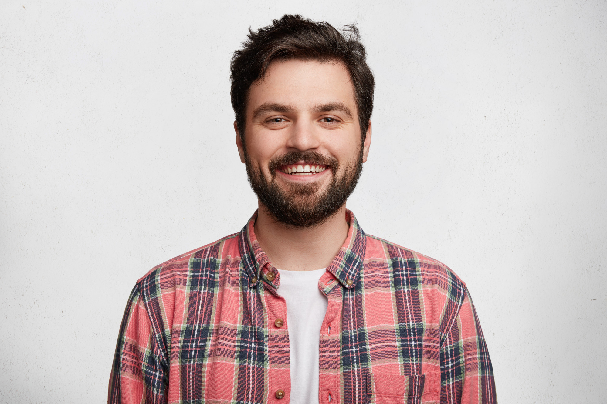

Tentang Kami
Ayo kembangkan Soft Skill mu
bersama ftech.
ftech. menyediakan berbagai kelas buat kamu yang ingin
melatih atau mengembangkan skill di berbagai profesi
Tak hanya kelas-kelas yang menarik ftech. juga mempunyai Tutors
atau pengajar yang terbaik dan sangat berkualitas dalam skill dan
juga pengalamannya
Our Class

Programing
Kelas Programing

Belajar Design
Kelas Design

Editing Video
Kelas Multimedia
- Our Top Tutors -
Di Bawah Ini Adalah Tutors Terbaik Yang Ada Di ftech.
Arya Adrian
Seorang designer Terbaik
Renalto Derek
Programer yang mengusai berbagai macam bahasa pemograman
